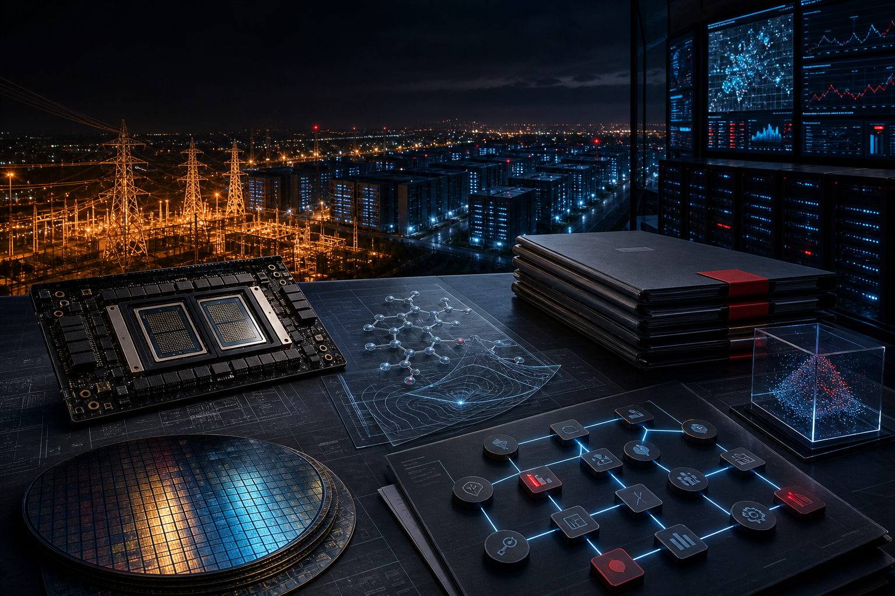

獨特切角
New York 先踩資料中心煞車，AI 基建撞上電網天花板
New York 成為第一個對大型新資料中心祭出 statewide moratorium 的美國州，讓昨天還在擴張的 AI data center 敘事，今天直接遇到能源與環境審查。

今天的 AI 熱點集中在電力、出口、治理與企業導入：模型敘事仍在，但真正改變速度的是機房、監管與工作流。
New York 成為第一個對大型新資料中心祭出 statewide moratorium 的美國州，讓昨天還在擴張的 AI data center 敘事，今天直接遇到能源與環境審查。
美國官員表示 Nvidia H200 AI chips 已開始運往中國，但量很少；這不是全面鬆綁，而是出口審批在地緣政治與商業壓力間的試探。
Albanese 政府據報將成立 Office of AI 與 national framework，政策訊號同時指向模型治理、版權爭議與 AI data center 需求。
Chai Discovery 完成 Series C，資金將用於擴大 AI-driven molecular design platform；在企業 agent 與晶片熱之外，biotech 仍能吸走巨額成長資本。
Caixin Global 報導 Alibaba 領投 AI video startup AIsphere 新一輪融資；目前只看到單一主要來源，暫列為需追蹤的資本訊號。
Google 的 AI infrastructure 調查被多家媒體引用，焦點落在 agentic AI 對傳統平台的壓力；企業接下來要補的不是 demo，而是資料、網路與營運底座。
Alation 發表 Intelligence Operating System，主打讓企業 AI 能在可信資料、治理與 workflow 上運作；這是 agent 導入從工具走向平台化的訊號。
DoorDash、Observe.AI 與 AWS 的合作把客服 AI 放進大規模品質監控與代理人支援，企業 AI 的評估標準正從模型能力轉向覆蓋率與服務品質。